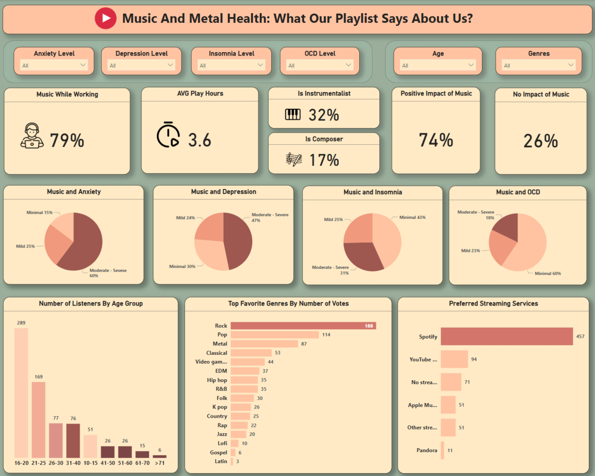

Introduction
In the digital age, music is more than just entertainment. It plays a significant role in mental health. This project analyzes user behavior and listening patterns to explore the connection between music and mental health issues such as depression, anxiety, insomnia, and OCD (Obsessive-Compulsive Disorder).
project objectives
Identify behavioral patterns in music listening habits across different age groups and mental health conditions.
Examine the relationship between music preferences (genre, play time, platform) and self-reported mental health symptoms such as anxiety, depression, insomnia, and OCD.
Assess the perceived emotional impact of music on users' well-being.
Provide data-driven recommendations for music streaming platforms (e.g., Spotify) to enhance user experience and support mental health through personalized content.
By achieving these goals, the project aims to highlight how music can be used not only for entertainment but also as a tool for emotional regulation and mental wellness.
Let's go!
SQL'S MAGIC:
Using SQL, I employed SELECT statements, aggregations (AVG(), COUNT(),SUM()), JOINS, subqueries, Common Table Expressions (CTEs), Window Functions (RANK()), Conditional Statements (CASE WHEN) to explore data.
Key insights:
1. Music Listening Habits:
79% of users listen to music while working, highlighting how music is used for focus and productivity.
The average listening time is 3.6 hours per day, showing that music is an integral part of daily life.
32% are instrumentalists and 17% are music composers, indicating a strong personal connection to music creation.
2. Perceived Impact of Music on Mental Health:
74% reported a positive impact of music on their mental well-being.
26% said music has no noticeable impact, suggesting that effects are subjective and possibly genre- or context-dependent.
3. Music and Mental Health Conditions
60% of participants reported moderate to severe anxiety.
47% experience moderate to severe depression.
43% reported only minimal insomnia, indicating music might help with relaxation or sleep routines.
31% have moderate to severe insomnia, which might relate to night-time listening habits or high-energy genres.
60% show minimal OCD symptoms, which may suggest that music helps reduce stress and intrusive thoughts.
4. Favorite Music Genres & Emotional Connection
Top 3 favorite genres by number of votes: Rock (188 votes), Pop (114 votes), Metal (87 votes). These genres often express strong emotions and can resonate with listeners dealing with intense feelings.
5. Listening Behavior by Age Group
The 16–20 age group dominates with 289 respondents, showing that young listeners are the most engaged and music-focused.
Older age groups show declining participation, highlighting music streaming as a youth-driven trend.
Conclusion:
This project demonstrates that music plays a powerful role in mental health. Key findings include:
People experiencing anxiety, depression, or insomnia still engage heavily with music.
Emotionally intense genres like Rock and Metal are particularly popular among users with mental health concerns.
Spotify dominates the streaming space and may serve as a therapeutic tool for many users.
